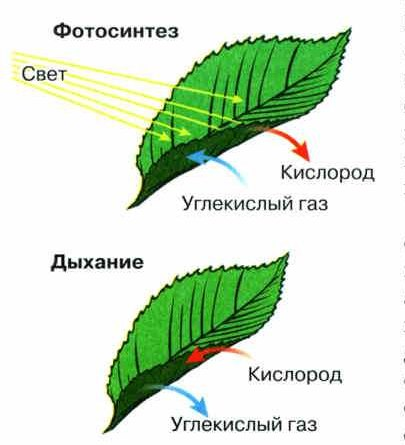
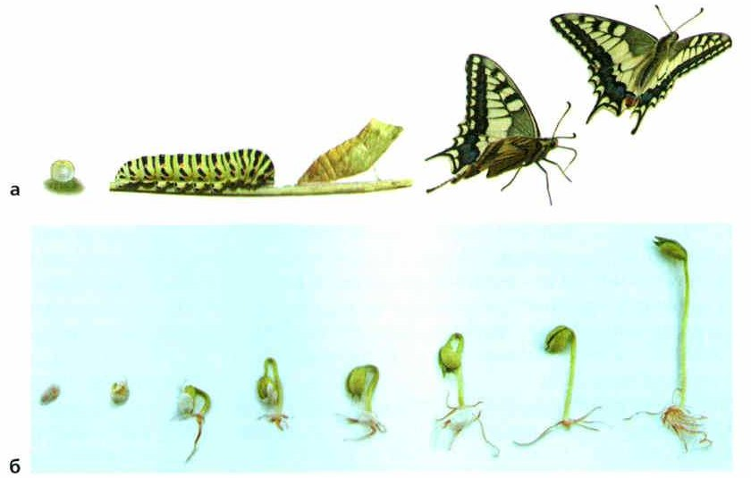
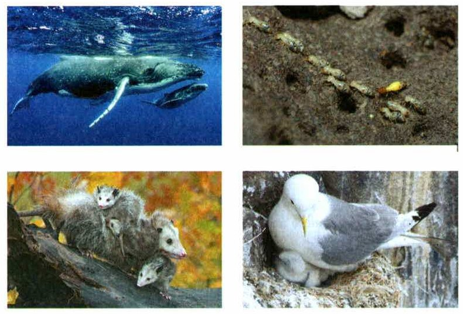
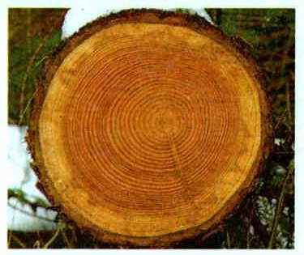
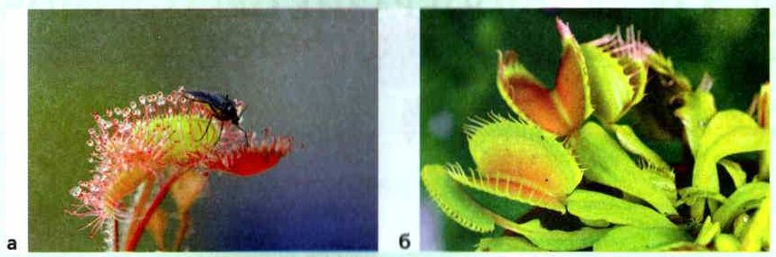

Процессы жизнедеятельности. Питание
Каждый живой организм делает одни и те же главные дела: питается, дышит, выделяет ненужное, растёт, развивается, размножается и отвечает на то, что происходит вокруг. Это процессы жизнедеятельности. У всех организмов они похожи, но есть и различия — из-за строения и образа жизни.
Питание нужно всем: с пищей в организм попадают вещества для роста, развития, движения и размножения. Но питаются организмы по-разному.
Одни животные едят только растения, другие — только животных, третьи всеядны: едят и то, и другое. Человек всеяден. В нашей пище есть органические вещества (белки, жиры, углеводы) и неорганические (вода и минеральные соли). Животные всегда едят готовые органические вещества — и получают из них энергию.
Растения питаются иначе. Снаружи они берут только углекислый газ, воду и растворённые в ней соли, а органические вещества делают сами, используя энергию света. Это фотосинтез (рис. 53). Он идёт в хлоропластах — помнишь их по §10? Без света растение погибает: ему не из чего сделать белки, жиры и углеводы.
Поэтому по способу питания организмы делятся на две группы. Автотрофы сами делают органические вещества из неорганических — это растения и некоторые бактерии. Гетеротрофы питаются готовыми органическими веществами — это все животные и человек, грибы, большинство бактерий и некоторые растения-паразиты (заразиха, петров крест).
Процессы жизнедеятельности организмов. Среди основных процессов жизнедеятельности, протекающих в организме, выделяют питание, дыхание, выделение, раздражимость, размножение, рост, развитие и др. Общие принципы протекания этих процессов едины для всех организмов, но есть и различия, связанные с особенностями строения и образа жизни.
Питание. Все живые организмы питаются. В процессе питания в организм поступают вещества, необходимые для роста, развития, движения, размножения и других процессов. Однако способы питания различных организмов могут различаться.
Одни животные используют в пищу только растения, другие — питаются только животными, а третьи — всеядны, т. е. могут питаться как растительной, так и животной пищей. Человек, например, всеяден, он питается разнообразной пищей. В состав этой пищи входят органические (белки, жиры, углеводы) и неорганические (вода и минеральные соли) вещества. Одним из характерных признаков животных является потребление готовых органических веществ и заключённой в них энергии.
Иначе питаются растения. Они получают извне лишь углекислый газ, воду и растворённые в ней минеральные соли, а органические вещества образуют сами, используя для этого энергию света. Этот процесс, происходящий в хлоропластах растительных клеток, называют фотосинтезом (от греч. фотос — свет и синтезис — соединение) (рис. 53). Из клеток, содержащих хлоропласты, образовавшиеся органические вещества поступают во все другие клетки растения. Без света растение погибает, потому что не может образовывать белки, жиры, углеводы, необходимые ему для жизни, как и всем живым организмам.
Таким образом, по способу получения органических веществ для питания организмы можно разделить на две группы — автотрофы (от греч. автос — сам и троф — пища) и гетеротрофы (от греч. гетерос — другой и троф — пища). К автотрофам относят растения и некоторые бактерии, способные самостоятельно образовывать органические вещества из неорганических. Все живые организмы, питающиеся готовыми органическими веществами, являются гетеротрофами. К этой группе относятся все животные и человек, грибы, большинство бактерий и некоторые растения-паразиты (заразиха, Петров крест).

▲ Сравни стрелки: что лист берёт и что отдаёт при фотосинтезе и при дыхании?
сами делают пищу из света, воды и углекислого газа: растения
едят готовую пищу: животные, человек, грибы
Авто-мобиль едет сам — и автотроф кормит себя сам.
1. Почему растение без света погибает?
2. Чем отличается питание животных от питания растений?
3. К какой группе относятся грибы — к автотрофам или гетеротрофам?
Пищеварение, выделение, дыхание, обмен веществ
Еда, попавшая в организм, перерабатывается — это пищеварение. Из пищи получаются новые вещества, и организм тратит их на рост и развитие. Ненужное удаляется наружу через органы выделения — это выделение.
Всем живым организмам нужна энергия. Они всё время поглощают из среды кислород, а выделяют углекислый газ. Такой постоянный обмен газами называют дыханием. Почти все организмы (кроме некоторых бактерий) получают энергию именно так.
Кислород есть в воздухе (около 20%), растворён в воде, проникает в почву. Поэтому дышать могут жители любой среды — и рыбы, и кроты.
Внутри организма кислород расщепляет сложные органические вещества — и выделяется энергия. А то, что осталось — углекислый газ и вода, — удаляется наружу.
Питание, дыхание и выделение вместе — это части обмена веществ. Обмен веществ — все связанные между собой процессы, в которых вещества в организме образуются и разрушаются. Он связывает организм с окружающей средой. У одноклеточных он идёт в одной клетке, а у многоклеточных в нём работают почти все части тела.
Пищеварение и выделение. Продукты питания, поступившие в организм, в процессе пищеварения перерабатываются. Из них возникают новые вещества, которые организм использует для роста и развития. Ненужные организму вещества удаляются наружу через специальные органы выделения.
Дыхание. Все живые организмы нуждаются в энергии. Из окружающей среды организмы беспрерывно поглощают кислород, а выделяют углекислый газ. Этот процесс постоянного обмена газами (газообмен) между организмом и окружающей средой получил название дыхание.
Практически все живые организмы (за исключением некоторых видов бактерий) получают энергию за счёт дыхания. Постоянное поступление кислорода в организм является жизненно необходимым. Кислород входит в состав воздуха (около 20%), растворяется в воде, проникает в почву. Благодаря этому организмы, обитающие в разных средах, могут использовать его для дыхания.
Кислород, поглощаемый организмом из окружающей среды, взаимодействует со сложными органическими веществами, расщепляя их. В результате выделяется энергия. А образовавшиеся более простые вещества, в том числе углекислый газ и вода, удаляются из организма.
Обмен веществ. Питание, дыхание и выделение являются составляющими обмена веществ. Обмен веществ — взаимосвязанные процессы образования и разрушения веществ, протекающие в организме и обеспечивающие его связь с окружающей средой. У одноклеточных организмов обмен веществ протекает в одной клетке, а у многоклеточных — задействуются структуры практически всех уровней организации организма.
4. Что организм поглощает и что выделяет при дыхании?
5. Почему организмы могут дышать в воде и в почве, а не только в воздухе?
6. Из каких процессов складывается обмен веществ?
Рост и развитие
Все организмы растут и развиваются. Рост — это увеличение размеров тела. Растения и грибы растут всю жизнь, а животные — только до определённого возраста.
Развитие — это когда организм меняется: меняется его строение и то, как он живёт (рис. 54). Лучше всего это видно у многоклеточных: из одной-единственной клетки постепенно получается целый организм.
Рост — стал больше. Развитие — стал другим. Гусеница растёт, а потом превращается в бабочку — это развитие.
Рост и развитие. Все организмы растут и развиваются. Рост — это увеличение размеров тела. Одни организмы, такие как растения и грибы, растут всю жизнь, а другие, например животные, — только до определённого возраста.
Развитие организма проявляется в последовательном изменении его строения и процессов жизнедеятельности (рис. 54). Особенно это хорошо заметно на примере многоклеточных организмов: из одной-единственной клетки в процессе развития формируется целостный многоклеточный организм.

стал больше: наклейка на стене выше, чем в прошлом году
стал другим: личинка → куколка → муравей
Рост — размер, развитие — изменения.
7. Какие организмы растут всю жизнь, а какие — только до определённого возраста?
8. Чем рост отличается от развития?
Размножение
Ещё одно удивительное свойство живого — давать потомство, похожее на себя. У волков рождаются волчата, у кошки — котята, из икринок рыб выводятся мальки и вырастают во взрослых рыб, из семян пшеницы вырастает пшеница (рис. 55). Это размножение.
Размножение. Ещё одно удивительное свойство живых организмов — способность давать подобное себе потомство. У волков рождаются волчата, у кошки — котята, из икринок рыб выводятся мальки, которые растут и превращаются во взрослых рыб, из семян пшеницы вырастает взрослое растение пшеницы (рис. 55). Этот процесс называется размножением.

9. Что такое размножение? Приведи пример из параграфа.
Раздражимость и связь со средой
Условия вокруг всё время меняются, и любой живой организм на это реагирует. Ответ организма на раздражители — свет, звук, холод, прикосновение — называют раздражимостью. Она помогает приспосабливаться к меняющимся условиям жизни.
Любой организм всё время связан с окружающей средой: берёт из неё воду, кислород, пищу и отдаёт ненужное. Благодаря обмену веществ организм — единое целое и постоянно связан со средой. Если обмен веществ прекращается, прекращается и жизнь.
Раздражимость. Так как условия в окружающей среде постоянно меняются, любой живой организм реагирует на эти изменения. Ответная реакция живых организмов на воздействие различных раздражителей и реагирование на них соответствующими изменениями на уровне клетки, ткани или всего организма называется раздражимостью. Раздражимость позволяет организму приспосабливаться к изменяющимся условиям жизни.
Взаимосвязь организмов с окружающей средой. Любой живой организм постоянно взаимодействует с окружающей средой, получая из неё необходимые вещества — воду, кислород, пищу, — и выделяя ненужные продукты жизнедеятельности. Благодаря обмену веществ организм представляет собой единое целое и осуществляет постоянную связь с окружающей средой. Если прекращается обмен веществ, прекращается и жизнь организма.
10. Зачем организму раздражимость?
11. Что организм получает из окружающей среды и что ей отдаёт?
12. Что будет, если прекратится обмен веществ?
Итоги и «Моя лаборатория»
Процессы жизнедеятельности организмов: питание, дыхание, выделение, обмен веществ, рост, развитие, размножение, раздражимость · Автотрофы · Гетеротрофы
- Какие процессы жизнедеятельности организмов вам известны?
- В чём заключается значение питания для жизнедеятельности организмов?
- Какую роль играет дыхание в жизни организмов?
- Что такое обмен веществ?
- Какое значение имеет размножение?
- Что такое раздражимость?
Почему нарушение работы какой-либо системы органов может привести к нарушению жизнедеятельности или даже гибели всего организма? Подтвердите примером ваш ответ.
- Цель: выяснить, как внешние условия влияют на то, сколько воды потребляет растение. Нужны: комнатное растение традесканция (можно другое), стеклянные сосуды (пробирки), вода.
- Возьмите традесканцию, аккуратно вытащите с комом почвы из горшка и отмойте корни от земли.
- Разделите побеги на две равные части и поставьте их в сосуды с водой. Корни должны быть полностью в воде.
- Одну часть поставьте в тёплое (23—25 °С) и светлое место, другую — туда, где слабое освещение и около 15 °С.
- Неделю наблюдайте за уровнем воды. Доливайте воду до прежнего уровня и записывайте, сколько долили в первую и во вторую группу.
- Через 7 дней сравните результаты. Есть ли разница между группами?
- Сделайте вывод.
Дневник опыта: сколько воды пьёт растение
Стакан № 1 — в тёплой светлой комнате, стакан № 2 — в прохладном тёмном коридоре. Каждый день пиши, сколько воды долила. Всё сохранится в этом браузере.
| № 1 тепло, свет | № 2 прохладно, темно | |
|---|---|---|
| День 1 | ||
| День 2 | ||
| День 3 | ||
| День 4 | ||
| День 5 | ||
| День 6 | ||
| День 7 | ||
| Вывод | ||
Сначала сделай опыт и запиши свой вывод.
- Приведите примеры раздражимости у растений, животных и человека.
- Прочитайте статью «Особенности биологического эксперимента» на с. 41—42 учебника. Представьте, что экспериментатор перенёс колеус из тени на хорошо освещённое место. Какие процессы жизнедеятельности изменятся у этого растения? Как оно станет развиваться, расти в новых условиях? Сделайте прогноз результатов этого мысленного эксперимента.
- Понаблюдайте за своим домашним животным. Обратите внимание, как реагирует ваш питомец на холод, повышение температуры в доме, резкий незнакомый звук. Опишите, что вы наблюдаете. Какое значение имеет подобная реакция в жизни животного?
- Подумайте, как можно подтвердить или опровергнуть утверждения: растение не способно двигаться; растение поглощает воду, но не испаряет её. Представьте ответ в письменном виде в рабочей тетради, изложив свои действия и рассуждения по пунктам.
- Растение поворачивает листья к свету; мухоловка захлопывает ловушку. Люся и Юкси убегают от резкого звука. Человек отдёргивает руку от горячего, жмурится от яркого света.
- Вспомни §6: колеус — светолюбивое растение. На свету у него усилится фотосинтез, листья станут ярче, он будет лучше расти и развиваться.
- Наблюдай за Люсей и Юкси: резкий звук — убегают, прячутся, пищат. Это помогает им спастись от хищника.
- Двигаться: поставь растение листьями от окна и через несколько дней посмотри — листья повернутся к свету. Испаряет воду: надень на ветку прозрачный пакет — на нём появятся капли.
Из семени эвкалипта всего за семь лет может вырасти дерево высотой 19 м и толщиной 1,5 м в обхвате, а некоторые виды бамбука за сутки вырастают больше чем на 1 метр!
Возраст дерева можно узнать, если посчитать годичные кольца (рис. 56). А возраст рыбы — по чешуе: в ней каждый год появляется новый слой.
Из семени эвкалипта всего за семь лет при благоприятных условиях может развиться дерево 19 м высотой и 1,5 м в обхвате, а некоторые виды бамбука за сутки могут вырасти более чем на 1 м.
О возрасте дерева мы можем узнать, подсчитав число годичных колец (рис. 56). Определить возраст рыбы можно по чешуе, в которой каждый год образуется новый слой.

Есть организмы, которые питаются то как автотрофы, то как гетеротрофы — смотря по условиям. Это миксотрофы (от греч. миксис — смешение). Например, одноклеточная эвглена зелёная на свету сама делает органические вещества, а в темноте питается готовыми.
Насекомоядные растения — росянка и мухоловка (рис. 57) — питаются как обычные растения, но ещё и охотятся на насекомых. У росянки листья с липкими волосками: насекомое прилипает, и лист медленно смыкается. Ловушка мухоловки — две створки с зубчиками по краям: стоит насекомому задеть волоски внутри — ловушка мгновенно захлопывается. Миксотрофами бывают и некоторые бактерии.
Есть организмы, способные в зависимости от условий питаться и как автотрофы, и как гетеротрофы. Такой тип питания называют миксотрофным (от греч. миксис — смешение), а организмы — миксотрофными. Например, эвглена зелёная, относящаяся к жгутиковым одноклеточным организмам, на свету ведёт себя как автотроф, самостоятельно синтезируя органические вещества, а в темноте — как гетеротроф (питается готовыми органическими соединениями).
Насекомоядные растения (росянка, мухоловка) — питаются как обычные растения (всасывая воду и растворённые в ней вещества из почвы), но также охотятся на насекомых и других мелких животных. Для охоты на насекомых у таких растений имеются свои хитрости. Например, росянка имеет специальные «ловчие» листья с многочисленными волосками. Когда насекомое садится на лист росянки, то оказывается в липкой слизи, и лист постепенно смыкается. Ловушка мухоловки состоит из двух створок, по краям которых расположены зубчики. Как только насекомое коснётся специальных волосков этих створок, то ловушка мгновенно закроется. К миксотрофным организмам относятся и некоторые группы бактерий.

- Попросите учителя объяснить, как измерять пульс. Потренируйтесь мерить свой пульс и пульс товарищей.
- Измерьте свой пульс в покое. Запишите результат.
- Сделайте десять интенсивных и глубоких приседаний. Снова измерьте пульс и запишите.
- Сравните результаты. Изменилась ли частота сердцебиения после нагрузки? В какую сторону?
- Сделайте вывод, учитывая, что приседания связаны с сокращением мышц, а частота пульса — с работой сердца.
- Отметьте, какие ещё изменения вы заметили в своём организме во время эксперимента.
- Обсудите результаты с товарищами.
Дневник опыта: пульс до и после приседаний
Считай удары сердца за 1 минуту (или за 15 секунд и умножь на 4).
| ударов в минуту | |
|---|---|
| В покое | |
| После 10 приседаний | |
| Через 3 минуты отдыха | |
| Вывод |
Сначала сделай опыт и запиши свой вывод.
Проверь себя
Нажимай по порядку — с самого начала.
Ошиблась — не страшно, попробуй другую кнопку.
Люся грызёт сено
Получает вещества с пищей.
Вдох кислорода, выдох углекислого газа
Газообмен со средой.
Наклейка на стене каждый год выше
Тело стало больше.
Личинка муравья стала куколкой
Изменилось строение.
Дегу убегают от резкого звука
Ответ на раздражитель.
Денежное дерево
Растение — само делает пищу на свету.
Люся
Животное — ест готовое.
Гриб
Грибы питаются готовыми веществами.
Полоз
Хищник — ест мышей.
Пшеница
Растение — фотосинтез.
1. Кто такие автотрофы?
2. К какой группе относятся Люся и Юкси?
3. Что поглощает организм при дыхании?
4. Что из этого — развитие, а не рост?
5. Как узнать возраст дерева?
6. Что будет с организмом, если прекратится обмен веществ?
Расскажи вслух
Питание: автотрофы и гетеротрофы
- Все организмы питаются: получают вещества для роста, развития, движения, размножения.
- Автотрофы (растения) сами делают органические вещества на свету — фотосинтез.
- Гетеротрофы (животные, человек, грибы) едят готовое; животные бывают растительноядные, хищные, всеядные.
Дыхание и обмен веществ
- Дыхание — поглощаем кислород, выделяем углекислый газ.
- Кислород расщепляет органические вещества — выделяется энергия.
- Питание, дыхание и выделение — части обмена веществ; без обмена веществ нет жизни.
Рост, развитие, размножение, раздражимость
- Рост — тело становится больше; развитие — организм меняется (яйцо → гусеница → куколка → бабочка).
- Размножение — потомство, похожее на родителей.
- Раздражимость — ответ на изменения вокруг: дегу убегают от резкого звука.